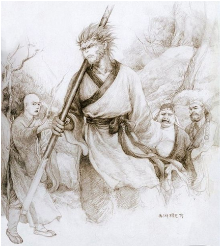
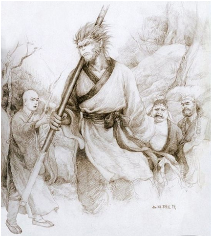

内容简介
故事不按《西游记》中单一的叙事模式推进，而是分三条线索展开叙述：一是猪八戒和阿月之间不离不弃的爱情，二是孙悟空与紫霞热烈却又压抑的感情，三是唐僧与小白龙之间哀婉的情意。故事在猪八戒、孙悟空、唐僧三者之间不断的转换，每个故事好像是各自独立的，但是它们共同拼接成了完整的故事。
我要这天，再遮不住我眼，要这地，再埋不了我心，要这众生，都明白我意，要那诸佛，都烟消云散
故事不按《西游记》中单一的叙事模式推进，而是分三条线索展开叙述：一是猪八戒和阿月之间不离不弃的爱情，二是孙悟空与紫霞热烈却又压抑的感情，三是唐僧与小白龙之间哀婉的情意。故事在猪八戒、孙悟空、唐僧三者之间不断的转换，每个故事好像是各自独立的，但是它们共同拼接成了完整的故事。
| 年份 | 奖项 |
|---|---|
| 2000 | 《悟空传》获第二届网络原创文学作品奖（“榕树下全球中文原创文学网”主办）“最佳小说奖”和“最佳人气小说奖”。 |
| 2008.8 | 《悟空传》入选新京报“网络文学十年十本书”，并排名第一。 |
| 2008.8 | 《悟空传》入选“十大震撼网络小说排行榜” |
| 2008 | 《悟空传》在起点中文网“第一届网络文学天地人三榜”的评选中名列天榜。 |
| 2008 | 《悟空传》被列为《网络人文书》系列丛书之一。 |
| 2009.5 | 《悟空传》在由中国作家出版集团和中文在线主办、长篇小说选刊杂志社等承办的“网络文学十年盘点”活动中入选“网络文学十年盘点十佳人气作品” |
今何在，原名曾雨，男，生于，江西南昌人，毕业于厦门大学，现居上海。 作家，畅销小说作者，被《中国图书商报》誉为内地网络文学第一人。并先后任游戏策划、电影编剧、《九州幻想》主编等职，大型原创东方幻想世界“九州”创始人之一 。